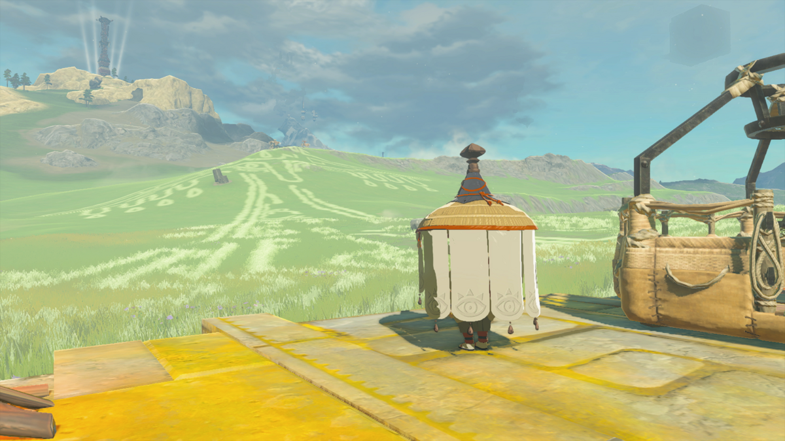
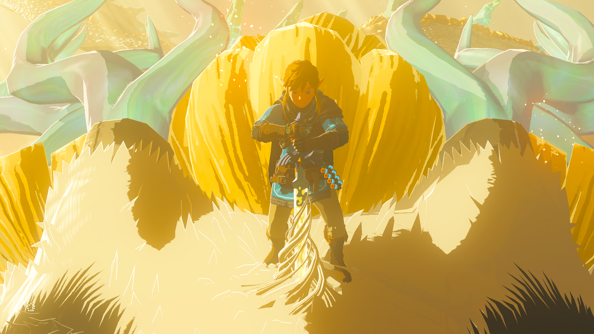

先说结论：11 加 1
这篇没有战斗，只有找东西：11 幅地上绘里各藏一滴龙之泪，集齐 11 滴后地图自动标出第 12 滴。每一滴都是一段记忆，12 段看完就知道塞尔达公主到底去哪了——以及大师之剑在谁头上。坐标以 gamertw 为准，逐处照抄，到了附近按地形找发光的泪滴。
| 阶段 | 内容 |
|---|---|
| 第 1–11 滴 | 按被遗忘神殿的地图，一幅绘一滴泪，顺序任意 |
| 第 12 滴 | 集齐 11 滴后地图自动标记，里斯特半岛螺旋中心 |
接取与奖励
| 项目 | 内容 |
|---|---|
| 接取 | 完成「英帕与地上图画」后自动开始 |
| 前置 | 英帕与地上图画、去过被遗忘神殿看地图 |
| 位置 | 海拉鲁各地、里斯特半岛 |
| 奖励 | 12 段记忆、塞尔达化龙的真相、大师之剑的下落 |
| 后续 | 丢失的勇者之剑（追白龙拔剑） |
怎么找泪滴
- 先去被遗忘神殿看墙上的地图，11 幅绘的位置一次记全。
- 每幅绘里找唯一实心发光的泪滴形水池，空心的水滴只是绘的一部分。
- 触摸泪滴看一段记忆，记忆按编号排，收集顺序任意。
- 11 滴集齐后打开地图，第 12 滴的位置自动标出来。

12 滴龙之泪总表
下表按记忆编号排列，坐标是游戏内坐标的约数：不同来源的实测值会有几十的偏差，实地以图形本身和实心泪滴为准，不要死磕最后一位数字。
| # | 地上绘与记忆 | 区域 | 泪滴坐标（约） | 泪滴落点 |
|---|---|---|---|---|
| 1 | 拉鲁像「我在哪？」 | 北海拉鲁平原，新玛丽塔驿站附近 | (-1413, 0966, 0134) | 拉鲁左眼 |
| 2 | 城堡「不熟悉的世界」 | 塔邦挞丘陵，利特村以东 | (-2551, 1889, 0326) | 正门上方中央 |
| 3 | 普尔亚平板「米涅鲁的忠告」 | 尔丁峡谷南侧，尔丁峡谷鸟望塔以南 | (1828, 0738, 0101) | 绘中实心发光处 |
| 4 | 莫尔德拉吉克形「格鲁德的袭击」 | 莫尔赛湖一带 | (0695, -1309, 0065) | 尾部与身体相接处的树丛 |
| 5 | 跪拜的加侬多夫「宣誓效忠」 | 格鲁德高地，萨菲亚桌一带 | (-3178, -1700, 0424) | 肩部上方中央 |
| 6 | 索尼娅王后「塞尔达与索尼娅」 | 伊鲁美尼高原，海拉鲁山脊 | (-3096, -0077, 0220) | 索尼娅头发下部一带 |
| 7 | 弯刀「索尼娅遭背叛」 | 戈戈比海岸 | (3326, -3566, 0017) | 刀柄护手左侧 |
| 8 | 魔王「魔王诞生」 | 北塔邦挞雪原，皮基达石林塔东北 | (-1864, 3622, 0245) | 左侧手臂上方 |
| 9 | 秘石「贤者们的誓言」 | 塔鲁斯高原，拉聂尔地区 | (4468, -0305, 0086) | 绘中实心发光处 |
| 10 | 纪念碑「王的职责」 | 法隆草原西北，海利亚湖以西 | (-0649, -2683, 0080) | 左侧中央 |
| 11 | 大师剑「跨越时空的大师剑」 | 尔丁山脉东侧悬崖 | (0892, 2952, 0369) | 剑尖处 |
| 12 | 龙之泪「龙之泪」 | 里斯特半岛螺旋中心，盖米米卡神庙旁 | (4535, 2144, 0013) | 集齐 11 滴后地图自动标记，前往中心即可 |
收集路线：按区域成组扫
收集顺序完全自由，11 幅可以按任何顺序拿；但记忆本身是按剧情时间编排的，拿到手的顺序和剧情顺序并不一致。如果你只在乎找齐，按区域成组扫最省事，别按记忆编号满地图折返。
- 西北线：利特村以东的城堡、北塔邦挞雪原的魔王、北海拉鲁平原的拉鲁像，三幅一次跑完。
- 西南线：格鲁德高地的跪拜的加侬多夫、海拉鲁山脊的索尼娅王后，两幅离得近，顺路一起拿。
- 东南线：莫尔赛湖的莫尔德拉吉克形、戈戈比海岸的弯刀、法隆草原的纪念碑，三幅沿法隆走。
- 东北线：塔鲁斯高原的秘石、尔丁峡谷的普尔亚平板、尔丁山脉东侧的大师剑，三幅加第 12 滴收尾。
- 每组出发前先开附近的鸟望塔，塔弹射加滑翔是最省精力的找绘方式，骑马在地面上找纯属浪费时间。
第 12 滴泪
集齐 11 滴后打开地图，第 12 滴的位置自动标出来：里斯特半岛螺旋中心，盖米米卡神庙旁，约 (4535, 2144, 0013)。触摸第 12 滴泪，看最后一段记忆「龙之泪」：塞尔达吞下秘石化身白龙，大师之剑就插在她头上。

12 段记忆看完，任务完成。下一站就是「丢失的勇者之剑」：追白龙拔剑，拔剑要两圈绿色精力。
关键信息
| 项目 | 内容 |
|---|---|
| 任务类型 | 主线任务，第 20 篇 |
| 前置任务 | 英帕与地上图画 |
| 关键地点 | 11 幅地上绘、被遗忘神殿、里斯特半岛 |
| 关键道具 | 滑翔伞 |
| 关键数字 | 12 滴龙之泪、12 段记忆；第 12 滴集齐 11 滴后才出现 |
| 坐标来源 | 本篇坐标以 gamertw 为准，均为游戏内坐标的约数，不同来源实测值会有几十的偏差 |
容易翻车的地方
- 地面上找绘：图案太大，地面上只看得到几条浅沟，先升空看全貌。
- 空心水滴当泪滴：实心发光的才是一滴。
- 没集齐 11 滴就去里斯特半岛：第 12 滴不会出现，白跑一趟。
- 跳过被遗忘神殿的地图：11 幅绘的位置墙上标得清清楚楚。
- 按顺时针死磕顺序：收集顺序任意，按区域成组扫最省事。
一句话总结
11 幅绘各一滴泪、集齐后地图标出第 12 滴、看完 12 段记忆就知道塞尔达化龙的真相——大师之剑在白龙头上，下一站追龙拔剑。